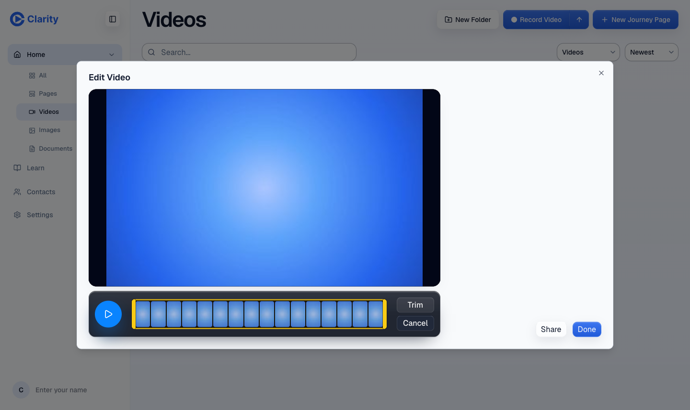
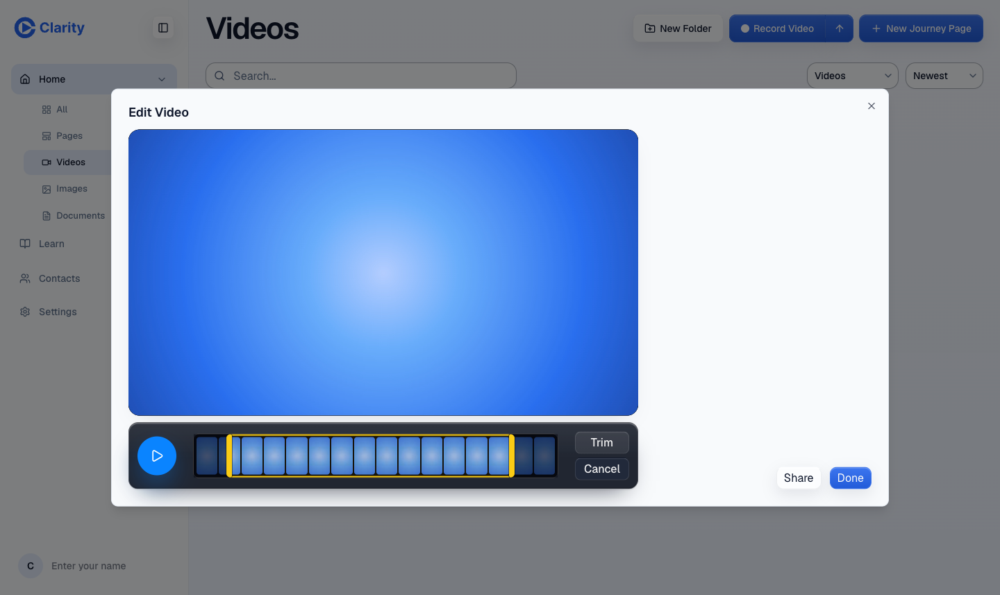
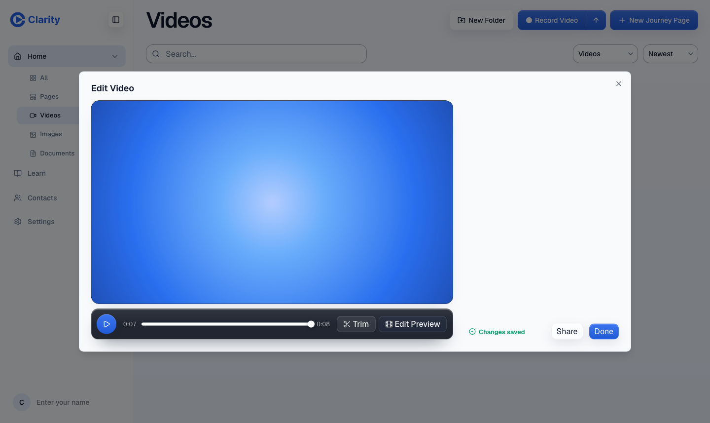
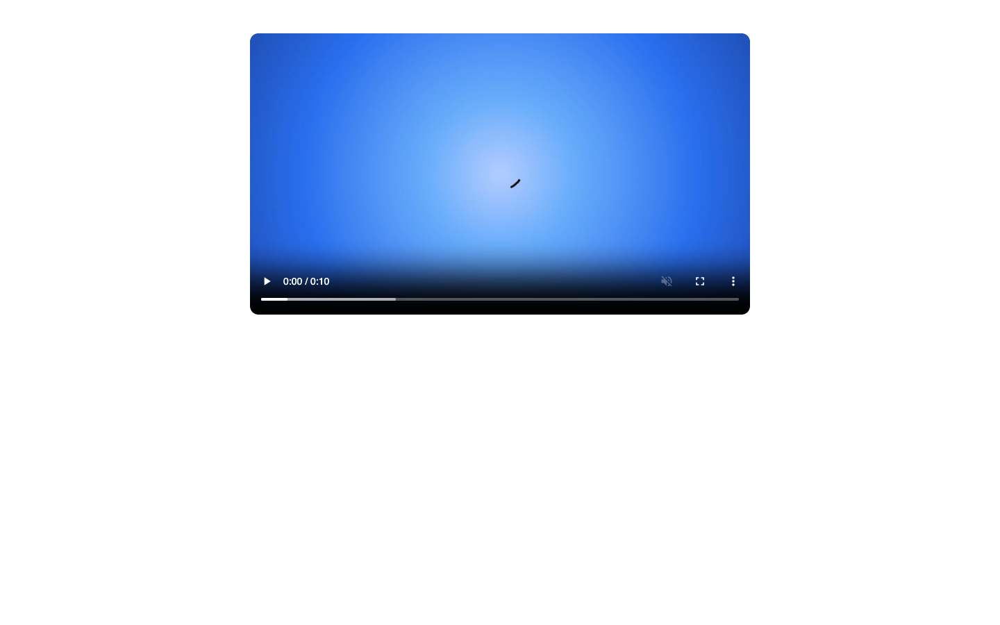
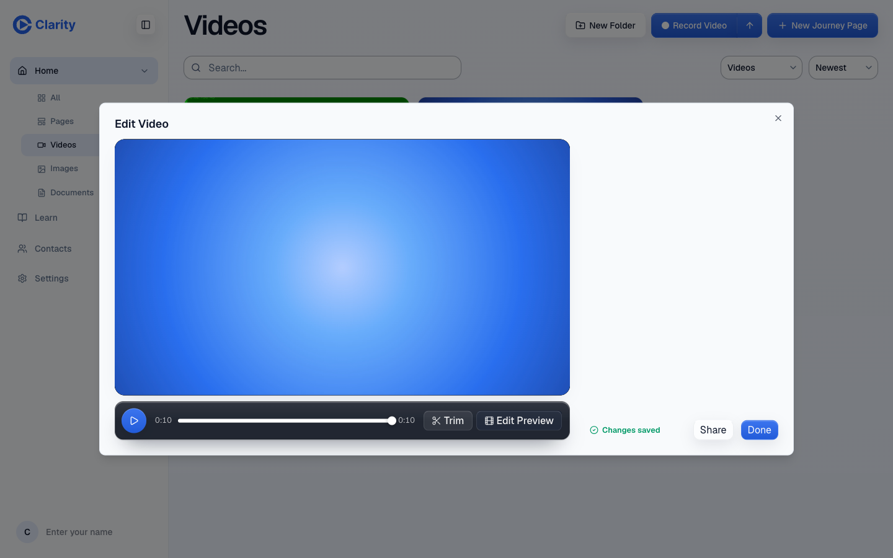

Recorded on the PR preview on 2026-09-16 with an existing 10.3 s test video trimmed to 1 s through 9 s, then reset. Previews refuse new uploads, so no new video was created. The clip was cut by the production video producer. PR: github.com/Clarity-Video-HQ/clarity/pull/712.
| Check | Result | Measured |
|---|---|---|
| Save returns in under 1 s with one request and no render-job polling | PASS | 265.6 ms from click to response, one edit request, zero render-job requests |
| The public page keeps playing the previous file while the clip renders | PASS | Previous file served for all 33.3 s the clip was pending |
| The trimmed clip plays once it is ready | PASS | Clip published 33.5 s after the save, plays at 7.98 s long |
| Reset works | PASS | 232 ms, full-length file back on the public page within 50 ms |






A reset while a clip is still rendering, two editors saving at once, and a long 240 s video. Two small findings: the editor fires two identical tree requests on each 5 s poll, and the request itself takes about 265 ms, so the "under 100 ms" wording in the PR applies only to the instant saving indicator.